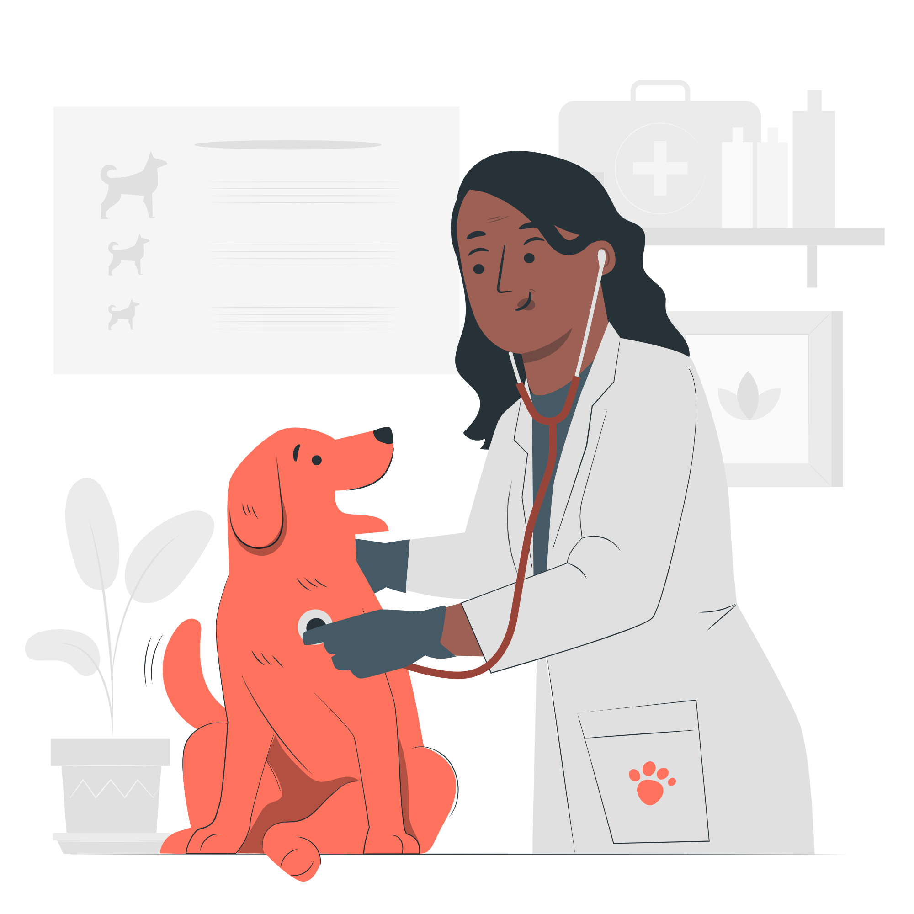

Sobre a Ponto
Bem-vindo ao Ponto Pet, o seu guia abrangente para cuidados com animais de estimação em todo o mundo! No Ponto Pet, você encontrará uma extensa rede de locais dedicados a fornecer serviços de alta qualidade para seus amados animais de estimação, independentemente de onde você esteja.

Navegue pelo nosso site fácil de usar para descobrir uma ampla variedade de pontos de cuidados para animais, incluindo clínicas veterinárias modernas, hospitais especializados, centros de reabilitação, abrigos e muito mais. Com a nossa extensa lista de locais, você poderá encontrar o melhor atendimento para todas as necessidades do seu animal de estimação, seja ele um cachorro, gato, pássaro, réptil ou qualquer outra criatura querida.

O Ponto Pet oferece recursos abrangentes para cada local listado, fornecendo informações detalhadas sobre seus serviços, equipe qualificada, instalações e avaliações dos clientes. Você também poderá ver fotos e obter informações de contato para agendar consultas ou tirar dúvidas antes de sua visita.
Além disso, o Ponto Pet se esforça para manter você informado sobre as últimas notícias e tendências relacionadas a animais de estimação. Você encontrará artigos informativos, dicas de cuidados, guias de treinamento e muito mais, para garantir que seu amigo peludo receba o melhor tratamento possível.
Se você estiver planejando uma viagem e precisa encontrar locais de cuidados para animais em seu destino, não se preocupe! O Ponto Pet possui uma função de pesquisa por localização, permitindo que você encontre facilmente opções próximas a você ou em qualquer cidade que esteja planejando visitar.

No Ponto Pet, valorizamos o bem-estar e a felicidade dos animais de estimação. Nossa missão é conectar você aos melhores pontos de cuidados para garantir que seus animais recebam o amor, a atenção e os cuidados que eles merecem.
Então, não perca mais tempo procurando em diferentes lugares. Visite o Ponto Pet hoje mesmo e encontre o ponto de cuidado perfeito para o seu animal de estimação, onde quer que você esteja no mundo!